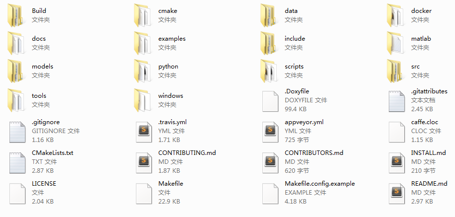
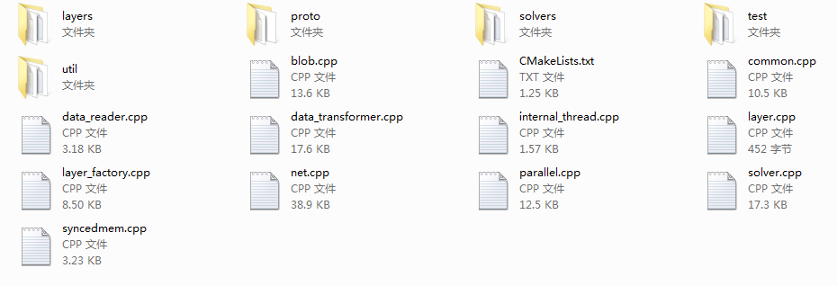
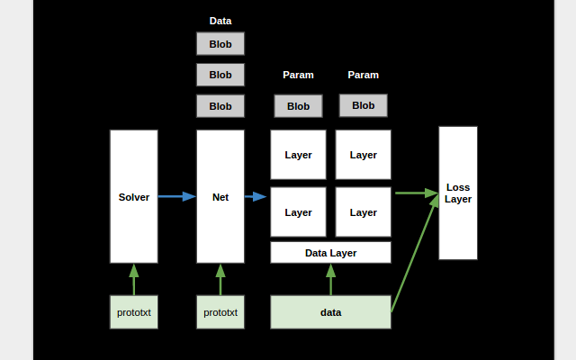
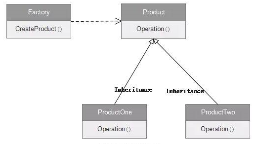
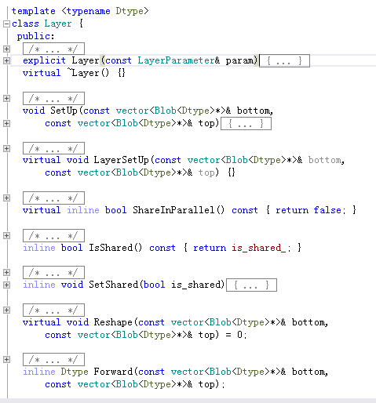
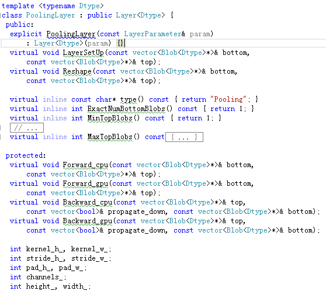
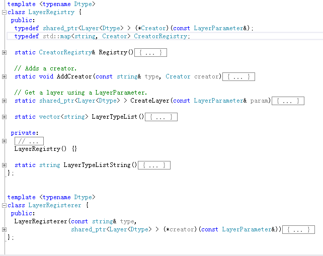

Caffe源码结构¶
目录结构¶
caffe主目录文件夹如下图所示。
核心代码文件夹
tools保存的源码是用于生成二进制处理程序的，caffe在训练时实际是直接调用这些二进制文件。includeCaffe的实现代码的头文件src实现Caffe的源文件
主要文件夹
data用于存放下载的训练数据docs帮助文档sexample一些代码样例matlabMATLAB接口文件pythonPython接口文件model一些配置好的模型参数scripts一些文档和数据用到的脚本
源码结构¶
src文件夹内容如下图所示
src/caffe文件夹内容如下图所示
文件夹 表示文件夹
srcgtestgoogle test一个用于测试的库你make runtest时看见的很多绿色RUN OK就是它，这个与caffe的学习无关，不过是个有用的库caffe关键的代码都在这里了- blob.cpp Blob（存储数据的结构）的实现
- layer.cpp Layer（网络中的层）的锁操作，详细实现在layer文件夹
- net.cpp Net（网络，包含多个层）的实现
- solver.cpp Solver（训练）的的锁操作，详细实现在solver文件夹
test用gtest测试caffe的代码util数据转换时用的一些代码。caffe速度快，很大程度得益于内存设计上的优化（blob数据结构采用proto）和对卷积的优化（部分与im2col相关）。proto即所谓的“Protobuf”，全称“Google Protocol Buffer”，是一种数据存储格式，帮助caffe提速。layersLayer（网络中的层）的实现solversSolver（训练）的实现
源码架构¶
Caffe架构如下图所示
Caffe框架主要有四个组件，Blob，Solver，Net，Layer。
- Blob是Caffe实际存储数据的结构，是一个不定维的矩阵，在Caffe中一般用来表示一个拉直的四维矩阵，四个维度分别对应Batch Size（N），Feature Map的通道数（C）,Feature Map高度(H)和宽度(W)。
- Layer是Net的基本组成单元，例如一个卷积层或一個池化层。每个Layer的输入和输出Feature map表示为Input Blob和Output Blob。
- 每个Net则由若干个Layer构成。
- Solver负责深度网络的训练，每个Solver中包含一个训练网络对象和一个测试网络对象。
工厂模式¶
工厂模式示意图如下图所示
Solver和Layer使用了工厂模式。
拿Layer举例，layer.hpp中的Layer类是总的产品标准，使用virtual修饰函数，layer文件夹中的PoolingLayer、ConcatLayer等类继承Layer类，是Layer类的不同实现。然后layer_factory.hpp中的LayerRegistry类实现了Layer的注册，根据层的名称然后new对应的类返回Layer类型。至此，工厂模式流程完成。
Layer类如下图所示
PoolingLayer如下图所示
ConcatLayer如下图所示
LayerRegistry如下图所示
依赖库及其作用¶
必须依赖库¶
CUDA库
- 作用：编写GPU程序，进行GPU加速，深度学习的引擎。
- CUDA（Compute Unified Device Architecture，统一计算架构[1]）是由NVIDIA所推出的一种集成技术，可以利用GPU作为C-编译器的开发环境。
BLAS库
- 作用：调用基础线性代数函数
- 可以选择ATLAS, MKL, or OpenBLAS.
- BLAS（Basic Linear Algebra Subprograms，基础线性代数程序集）是一个应用程序接口（API）标准，用以规范发布基础线性代数操作的数值库（如矢量或矩阵乘法）。
Boost库
- 作用：C++主程序编写
- 它是一个可移植、跨平台，提供源代码的C++库，作为标准库的后备。很多性能被C++11，C++14支持，不过有差别。
- shared_ptr.hpp：智能指针，使用它可以不需要考虑内存释放的问题；
- date_time/posix_time/posix_time.hpp：时间操作函数；
- make_shared.hpp：make_shared工厂函数代替new操作符；
- thread.hpp：线程操作；
- math/special_functions/next.hpp：数学函数；
- python.hpp：C++/Python互操作；
- python/raw_function.hpp：C++/Python互操作；
- python/suite/indexing/vector_indexing_suite.hpp：C++/Python互操作；
ProtoBuf库：GoogleProtocol Buffer（简称ProtoBuf）
- 作用：用于文本解析，即解析prototxt文件。
- 它是一种轻便高效的结构化数据存储格式，可以用于结构化数据串行化，或者说序列化。
- 要使用ProtoBuf库，首先需要自己编写一个.proto文件，定义我们程序中需要处理的结构化数据，在protobuf中，结构化数据被称为Message。在一个.proto文件中可以定义多个消息类型。用Protobuf编译器（protoc.exe）将.proto文件编译成目标语言，会生成对应的.h文件和.cc文件，.proto文件中的每一个消息有一个对应的类。
GLog库
- 作用：日志输出
- 它是一个应用程序的日志库，提供基于C++风格的流的日志API，以及各种辅助的宏。它的使用方式与C++的stream操作类似。
GFlags库
- 作用：处理命令行参数
- 它是google的一个开源的处理命令行参数的库，使用C++开发，可以替代getopt函数。GFlags与getopt函数不同，在GFlags中，标记的定义分散在源代码中，不需要列举在一个地方。
HDF5库：
- 作用：支持的数据库之一
- HDF（HierarchicalData File）是美国国家高级计算应用中心（NCSA）为了满足各种领域研究需求而研制的一种能高效存储和分发科学数据的新型数据格式。它可以存储不同类型的图像和数码数据的文件格式，并且可以在不同类型的机器上传输，同时还有统一处理这种文件格式的函数库。
- HDF5是分层式数据管理结构。HDF5不但能处理更多的对象，存储更大的文件，支持并行I/O，线程和具备现代操作系统与应用程序所要求的其它特性，而且数据模型变得更简单，概括性更强。
可选依赖库¶
OpenCV库
- 作用：图像操作
- OpenCV，Open Source Computer Vision Library，是一个跨平台计算机视觉库。它轻量级而且高效——由一系列 C 函数和少量 C++ 类构成，同时提供了Python、Ruby、MATLAB等语言的接口，实现了图像处理和计算机视觉方面的很多通用算法。
- 很常用。
LevelDB库
作用：支持的数据库之一
它是google实现的一个非常高效的Key-Value数据库。它是单进程的服务，性能非常高。它只是一个C/C++编程语言的库，不包含网络服务封装。
LevelDB特点
- LevelDB是一个持久化存储的KV系统，它将大部分数据存储到磁盘上；
- LevelDB在存储数据时，是根据记录的Key值有序存储的；
LMDB库
作用：支持的数据库之一
它是一个超级快、超级小的Key-Value数据存储服务，是由OpenLDAP项目的Symas开发的。使用内存映射文件，因此读取的性能跟内存数据库一样，其大小受限于虚拟地址空间的大小。
依赖snappy库
- 作用：压缩与解压缩
- 是一个C++库，用来压缩和解压缩的开发包。它旨在提供高速压缩速度和合理的压缩率。Snappy比zlib更快，但文件相对要大20%到100%。
cuDNN
- 作用：用于Caffe的GPU加速。
- cuDNN是用于深度神经网络的GPU加速库。它强调性能、易用性和低内存开销。
- 被集成到Caffe中，也是一大亮点